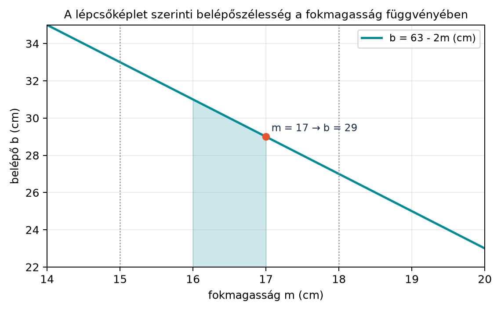

A megrendelő egy családi ház földszintje és emelete közé falépcsőt szeretne. A szintkülönbség adott, de ha az asztalos csak „szemre” osztja be a fokokat, a lépcső túl meredek vagy túl lapos lesz. A rossz lépcsőn fárasztó a járás, idősebbek és gyerekek könnyen megbotlanak. Ha pedig a fokok nem egyformák, az agy nem tudja megszokni a lépésritmust, ezért a lépcső még akkor is balesetveszélyes, ha szép. Ezért a falépcső készítése szerkesztéssel és számítással kezdődik, nem pedig a fűrészgéppel.
Képzeljünk el egy egyenes, pofás falépcsőt. Két vastag oldalsó deszka, a pofa tartja a vízszintes foklapokat. A fokok élére sokszor függőleges homloklap kerül, amely eltakarja a fokok közötti rést és merevíti a szerkezetet. A lépcső tetején a korlát kapaszkodója zárja a járófelületet. A szerkesztés azt határozza meg, hogy hány fok kell, milyen magasak legyenek a fokok, és mekkora legyen a belépő mélység.
Definíció.
A falépcső olyan, elsősorban faanyagból készült
lépcsőszerkezet, amely szintkülönbséget hidal át járófokok sorozatával.
A teherviselő szerkezet lehet két oldalsó pofa, középső tartógerenda,
kengyel vagy falba fogott konzol.
A gyakorlatban négy alapszerkezetet különböztetünk meg:
A lépcső járófelületét a foklap adja. A foklap elülső éle gyakran túlnyúlik a homloklapon, ezt fokorr hívjuk. A homloklap a foklapok közötti függőleges elem; nem minden lépcsőn van. A pofa a fokokat tartó ferde oldalelem, a tartógerenda a fokok alatti teherviselő gerenda. A lépcsőkar a két pihenő vagy a kezdő- és érkezőszint közötti foksor.
A vázlatok azonos léptékűek (fokmagasság 175 mm, belépő 280 mm, foklap 40 mm, homloklap 18 mm, pofa 40 mm). A pofás lépcsőnél a teher a foklapról a pofahornyon át a pofákra jut, a kengyelesnél az acél kengyeleken át a tartóprofilra, a gerendásnál a fokok alatti tartógerendára, a lebegőnél a rejtett acél csatlakozáson át a teherhordó falra.
A lépcsőszerkesztéshez először a következő méreteket kell értelmezni:
Összefüggés.
A legfontosabb méretezési képlet a lépcsőképlet:
Ezt a képletet a tapasztalati lépéshosszból vezetjük le. Felnőtt ember átlagos vízszintes lépéshossza kb. 63 cm. Lépcsőn járva az egy lépéshez tartozó vízszintes belépő és két függőleges emelkedés összegének a természetes lépéshosszal kell összhangban lennie. Ha például a fokmagasság 17 cm, akkor a képlet szerint a belépőnek -nek kell lennie.
Szabály.
A lépcső akkor kényelmes és biztonságos, ha a fokmagasság és a belépő a
lépcsőképlet közelében marad. A lakóépületekben jellemző tájékoztató
tartományok:
Ezek az értékek az épület rendeltetésétől, a tűzszakaszolástól és a menekülési útvonaltól függenek, ezért a konkrét terv mindig előírás. A pontos határértékeket a hatályos építési előírás, elsősorban az OTÉK és a tűzvédelmi műszaki irányelvek tartalmazzák (ellenőrizendő).
Az alábbi ábra a lépcsőképletből kiszámolt belépőt mutatja a fokmagasság függvényében:

Megjegyzés.
A lépcsőképlet a kényelmes járás tapasztalati képlete, nem merev
tervezési előírás. Mindig ellenőrizni kell az adott épületre vonatkozó
jogszabályi és tervi előírásokat.
Számítás.
Adott egy családi ház földszintje és emelete közötti kész padlószintek
távolsága:
.
A kényelmes lépcsőhöz célérték:
,
.
Kérdés: hány fok szükséges, mekkora a pontos fokmagasság, és mennyi a
lépcsőkar vízszintes vetületi hossza?
A fokmagasság közelítő értékéből a fokszám:
.
A fokszámot egészre kerekítjük:
fok.
A pontos fokmagasság:
A lépcsőképletből a belépő:
Ez a belépő a 26–32 cm-es kényelmes tartományban van.
A lépcsőkar vízszintes vetületi hossza a fellépések száma
alapján: a fellépések száma
,
de a foklapok (belépők) száma
,
mert az utolsó fellépés az érkező padlószintre visz. A kar vízszintes
hossza:
Ellenőrzés: a lépcső hajlásszöge megközelítőleg , ami kényelmes, nem túl meredek. ∎
Ha a lépcső fordul, a fokok nem párhuzamos téglalapok, hanem a forduló belső oldalán keskenyebbek, a külső oldalon szélesebbek. A szerkesztés alapja a járóvonal, mert az emberi lépést ezen a vonalon kell egyenletesen elosztani.
Definíció.
A fordulós lépcső olyan lépcső, amelyben a kar irányt
változtat. A fordulás lehet negyedfordulós (90°) vagy
félfordulós (180°). A fordulóban a fokok alakja ék
alakú, ezért ívből lépcsőfokokat is készítenek.
A szerkesztés lépései egy negyedfordulós lépcsőhöz:
A kiegyenlítés lényege: a forduló előtti 2–3 fok homlokvonalát kissé elforgatjuk úgy, hogy a járóvonalon a belépő ne változzon, de a belső sarokban is járható szélesség maradjon. Ezt a szerkesztést legjobban fokbeosztási sablonon, a tényleges alaprajzi méretben kell elvégezni.
Számítás.
Adott egy negyedfordulós lépcső, a lépcsőkar szélessége 100 cm, a belső
sugár az orsófalnál 20 cm, a járóvonal sugara 60 cm. A kényelmes belépő
a járóvonalon 28 cm. A negyedkörív hossza a járóvonalon:
A fordulóban a fokok száma:
tehát 3–4 fokot kell elhelyezni; a pontos felosztást a járóvonalon kell
elvégezni, és a kiegyenlítéssel a belső fokéleket fokozatosan
kiszélesíteni. ∎
Az (a) alaprajzon a karszélesség 100 cm, a belső sugár 20 cm, a járóvonal a belső széltől 40 cm-re fut. Kiegyenlítés nélkül a forduló belső oldalán a fok csak kb. 9 cm széles; kiegyenlítéssel (a homlokvonalak belső végpontjait a belső határvonal mentén arányosan elosztva) ez kb. 20 cm-re nő, miközben a járóvonalon a belépő 28 cm marad (szemléltető módszer; a legkisebb megengedett belső fokszélesség ellenőrizendő: OTÉK, szakkönyv). A (b) oldalnézet az egyenes kar számítását mutatja: cm, 16 fellépés × 17,5 cm, 15 belépő × 28 cm, cm, hajlásszög ≈ 32°. Az interaktív lépcsőkalkulátorban a szintkülönbség, a cél-fokmagasság, a karszélesség, a belső sugár és a járóvonal helye változtatható, a kiegyenlítés ki-be kapcsolható.
A lépcső nem készül el korlát nélkül. A korlát a járás biztonságát szolgálja, vezeti a kezet, és megakadályozza a leesést.
A korlát részeinek gyártásakor a kapaszkodót ergonomikus keresztmetszettel, a korlátorsókat sablonnal, ismétlődő profillal készítjük. A rögzítés leggyakrabban tiplivel, csavarral és ragasztással, vagy rejtett fém kötőelemmel történik. A korlát szerkezeti kapcsolatait úgy kell kialakítani, hogy a kapaszkodóra támaszkodó ember terhét biztonságosan felvegye (ellenőrizendő: a kapaszkodó terhelési előírása).
A lépcsőfokok anyaga leggyakrabban tömörfa (tölgy, bükk, kőris, akác) vagy rétegelt-ragasztott lap, amelyet tömörfa élzáróval vagy tömörfa borítással látnak el. A foklap vastagsága jellemzően 30–50 mm, a homloklap 16–22 mm. A pofa vastagsága egyenes lépcsőn 40–60 mm; a pofa anyaga tömörfa vagy rétegelt-ragasztott fenyő, illetve kemény lombos furnérral borított lap.
Technológiai lap.
Termék: egyenes, pofás falépcső karja, tömör tölgy
foklapokkal, zárt homloklappal.
Anyag: tölgy foklap 40 mm, tölgy homloklap 18 mm, pofa
rétegelt-ragasztott fenyő 45 mm, PVAc D3 ragasztó, facsavar,
tipli.
Gépek és szerszámok: asztalos körfűrészgép, egyengető
gyalu, vastagsági gyalu, alsómaró, hosszlyukfúró, kézi felsőmaró,
csavarozó, derékszög, mérőszalag, szorítók, sablonok.
Gépbiztonság. A művelet betanított, felügyelt tanulónak
szól; védőberendezés nélkül, egyedül, fáradtan ne végezd. A körfűrész
hasítókése, védőburkolata és tolófája, az egyengetőn a késtengely védője
(hídvédő) a munkadarabhoz állítva, a vastagsági gyalun a
visszacsapódás-gátló és a maró védőburkolata legyen a helyén. A tölgypor
keményfapor, rákkeltő anyag: hatékony elszívás és legalább FFP2, poros
művelethez FFP3 légzésvédő, valamint hallásvédő szükséges
(ellenőrizendő: keményfapor-expozíciós határérték és vonatkozó
rendelet). Indítás előtt ellenőrizd: a szerszám éles és rögzített, a
fordulatszám a szerszámra írt érték alatt van, az elszívás működik, a
munkadarabban nincs szeg, laza göcs vagy repedés, a munkaterület
szabad.
A gyártás lépései:
Minőségellenőrzés.
A lépcsőt a következő szempontok szerint ellenőrizzük:
Ha eltérést találunk, a hiba helyét a rajzhoz mérten azonosítjuk, és a beépítés előtt javítjuk.
| Hiba | Lehetséges ok | Helyes gyakorlat |
|---|---|---|
| A lépcső túl meredek vagy túl lapos | A fokmagasságot és a belépőt nem a lépcsőképlettel, hanem „szemre” választották | Először a fokmagasságot számoljuk a szintkülönbségből, majd a belépőt a képlettel ellenőrizzük |
| A fordulóban a belső fokok túl keskenyek, járhatatlanok | Nem a járóvonalon osztották fel a fokokat, hanem a belső sarok mentén | A felosztást mindig a járóvonalon végezzük, és kiegyenlítéssel ellenőrizzük a belső szélességet |
| A korlátorsók távolsága nem egyenletes, a kapaszkodó magassága ingadozik | Az orsókat szemre osztották, a kapaszkodót egyetlen magasságban rögzítették | Előre kiszámolt osztásközökkel, sablonnal dolgozzunk, a kapaszkodó magasságát a fok éleitől mérjük |
| A lépcső nyikorog, a fokok mozognak | A pofahorony túl tág, a ragasztás hiányos, a csavarok nem tartanak | A fok–pofa kapcsolatot hornyos-csapos illesztéssel, D3 ragasztóval és facsavarral készítsük, szorítsuk a kötést a kötésidő alatt |
| A lépcsőkar a terhelésre meghajlik | A pofa vagy a tartógerenda keresztmetszete alulméretezett, a fokok túl hosszúak | A teherviselő méreteket szakági méretezés alapján válasszuk meg; ne a gyakorlatból „lefele” kerekítsünk |
Egy asztalos családi házba készített egyenes tölgy falépcsőt. A megrendelő a helyszínen azt kérte, hogy a lépcső minél kisebb helyet foglaljon el, ezért az asztalos 19 cm-es fokmagasságot és 26 cm-es belépőt választott. A lépcső elkészült, de az idős nagymama félve járt rajta, mert a fokok magasak voltak, a belépő pedig rövid. A lépcsőképlet szerint , ami még a 63 cm-es ideál közelében van, de a magas fokmagasság a kényelmes tartomány fölé esett. A tanulság: a helytakarékosság nem mehet a biztonság és a kényelem rovására; a fokmagasságot a lépcsőképlet és a jogszabályi határok együttes figyelembevételével kell meghatározni. A hibás lépcsőt végül csökkentett fokmagasságúra át kellett építeni, ami jelentős többletköltséggel járt.
1. feladat (A). Fogalmazd meg, mi a különbség a pofás, a kengyeles és a lebegő lépcső között. Adj példát, mikor melyiket választanád.
2. feladat (A). Egy lépcső fokmagassága 17 cm, belépője 29 cm. Ellenőrizd a lépcsőképlettel, és foglald össze, kényelmes-e a lépcső.
3. feladat (B). Egy emeleti lépcső szintkülönbsége 300 cm. A kívánt fokmagasság 17,5 cm. Számítsd ki a fokszámot, a pontos fokmagasságot és a belépőt, ha a lépcsőképletet teljesíteni akarjuk. Mennyi lesz a lépcsőkar vízszintes vetületi hossza?
4. feladat (B). Egy negyedfordulós lépcsőn a járóvonal sugara 70 cm. A járóvonalon a kényelmes belépő 28 cm. Hány fokot helyezz el a negyedkörívben, és mekkora lesz a járóvonalon mért ívhossz?
5. feladat (C). Egy meglévő lépcsőn a fokmagasság 18 cm, a belépő 27 cm. A megrendelő szerint túl meredek. Javasolj a lépcsőképlet alapján olyan belépőt, amely a 18 cm-es fokmagassághoz jobban illik, és magyarázd el, miért nem csökkenthető a fokmagasság a szintkülönbség és a rendelkezésre álló hossz ismerete nélkül.
6. feladat (C). Rajzold le szövegesen egy negyedfordulós lépcső kiegyenlítésének lépéseit: hol húzódik a járóvonal, hogyan osztod fel, mit ellenőrzöl a belső oldalon.
7. feladat (D). Készíts technológiai lépéssort egy pofás lépcső fokainak bemarásához és összeállításához. Tüntesd fel a gépi munka gépbiztonsági ellenőrzéseit és a minőségellenőrzési pontokat.
A pofás lépcsőt két oldalsó, ferde pofa tartja, a fokok a pofák hornyaiba vagy rögzítőelemére kerülnek. A kengyeles lépcsőt oldalt acél kengyel vagy profil tartja, a fa fokok csak a járófelületet adják. A lebegő lépcsőn nincs látható oldalsó tartó, a fokok rejtett szerkezettel vagy falba fogással kapcsolódnak. Pofás lépcsőt hagyományos, tömörfa megjelenéshez, kengyelest ipari vagy modern belső térbe, lebegőt minimalista, látványos helyekre választunk, utóbbinál a szerkezeti tervezés fokozottan szakági feladat.
Adott:
,
.
Képlet:
.
Ellenőrzés: az eredmény pontosan a 63 cm-es lépéshossz, és mindkét méret
a kényelmes tartományban van. A lépcső kényelmes.
Adott:
,
kívánt
.
Fokszám:
,
kerekítve
.
Pontos fokmagasság:
Belépő:
A fellépések száma
,
a foklapok (belépők) száma
,
így a kar vízszintes vetületi hossza:
Ellenőrzés: a fokmagasság 17,65 cm kissé magas, de még a 15–18 cm-es
tartományban van; a belépő megfelelő. ∎
Adott:
,
.
A negyedkörív hossza:
A fokok száma:
tehát 4 fokot helyezünk el a negyedkörívben, a pontos osztást a
járóvonalon végezzük. ∎
A lépcsőképlet szerint
-es
fokmagassághoz a belépő:
Ez azt jelenti, hogy a meglévő belépő éppen a képlet szerint van. A
meredekség abból adódik, hogy a fokmagasság a magasabb tartományban van.
A fokmagasságot csak akkor lehet csökkenteni, ha a szintkülönbséghez
több fokot, és így hosszabb lépcsőkart építenek. Ha a rendelkezésre álló
hossz rögzített, a fokmagasságot növelni kell, ami még meredekebbé teszi
a lépcsőt. Ezért a megoldás a helyigény, a szintkülönbség és a kényelmi
határok együttes vizsgálata.
A kiegyenlítés szöveges lépései:
Egy lehetséges technológiai lépéssor:
A falépcső szerkezete és méretezése az épületasztalos munka egyik legnagyobb pontosságot igénylő feladata. A pofás lépcső két oldalsó pofával, a kengyeles acél kengyellel, a gerendás ferde tartógerendával, a lebegő rejtett szerkezettel tart. A foklap a járófelület, a homloklap a fokok közötti függőleges elem. A méretezés alapja a lépcsőképlet: , ahol a fokmagasság, a belépő. A fokmagasságot a szintkülönbségből a fokszám egészre kerekítésével kapjuk: , majd . A járóvonalon osztjuk el a fordulós lépcső fokait, és kiegyenlítéssel biztosítjuk, hogy a belső oldalon is járható szélesség maradjon. A korlát kapaszkodóból, főoszlopból és korlátorsókból áll; a kapaszkodó magassága kb. 100 cm, az orsók távolsága legfeljebb 10–12 cm (ellenőrizendő). A gyártás során a fokok és pofák kapcsolatát hornyos-csapos illesztéssel, D3 ragasztóval és csavarral készítjük. Továbbvitt eredmény: a lépcsőszámítást és a fokbeosztást használjuk a helyszíni beépítésnél Épületasztalos-ipari és kültéri termékek helyszíni beépítése és a vizsgaremek műszaki dokumentációjában A vizsga szerkezete és elméleti mintafeladatok.